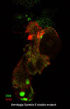
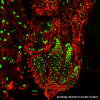
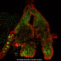
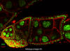

Background Information:
Last summer (2004), I was given the opportunity (through Wachusett Regional High School) to work in Bill Theurkauf's bio-tech lab at UMass Medical School. During that summer, I worked in the lab about six hours a week with a scientist named Heather Cook, who actually began this investigation into relationship between the Armitage and Spindle E genes. Heather taught me the basics of what was going on and how to do things in a lab. The summer work was an incredible learning experience. Heather moved away at the end of the summer, and so I stopped working in the lab. When school resumed, I was asked to present to the WRHS Science Seminar on by summer experience. Click here to see that power point presentation.
I was very interested in this science, so I pursued lab work once again, this time completely independently (not through the school). I resumed work in the lab again in October, and I worked there about six hours a week until July 2005. Since October, my role in the lab has gradually shifted from clumsy observer to productive assistant. I am now working relatively independently, under the direction of Bill Theurkauf, Diana Bratu, Carla Klattenhoff and working together with the entire lab.
I am doing this work because I want to learn more about it and it is a great experience, and as a by-product, I get to present the work as my science fair project. Please realize that the ideas for doing these experiments are not my own, they were conceived by other people.
For some background on fruit fly oogenesis, I suggest looking at Flymove.
Experiment 1
This experiment was conceived and done mostly by Heather Cook. Although I did not really do too much in this experiment, I am including it because it is the foundation for all subsequent experiments on these flies.
The Problem:
It has been shown that the Armitage and Spindle E genes are both in the RNAi pathway, but how do they function in that pathway? Are they linear (in sequence) or redundant (in parallel)?
The Hypothesis:
The Armitage and Spindle E genes function redundantly in the RNAi pathway, so we should see a more severe defect if we create double mutant Armi/Spn E flies.
Methods and Procedures:
Heather Cook built several lines of Armi/Spn E double mutants by recombination.
We stained their ovaries using fluorescent dyes labeling DNA and Actin, and looked at them with the confocal microscope. (see pictures with DNA and Actin)
<-- these are pictures of the mutant ovaries
<-- these are pictures of wildtype (normal) ovaries (at different magnifications: the leftmost picture is a view of many ovarioles (strings of progressing eggs) together in the ovary; the central picture is one ovariole, and the rightmost picture is a view of a single nurse cell within the ovariole. (the small holes in the membrane are ring canals that allow microtubules to migrate through the nurse cells to create a scaffold for transporting nutrients to the oocyte(future egg)))
Results and Conclusions:
The images showed that the double mutants are in fact much more severely defected than either of the two mutations alone. Therefore our hypothesis was correct: the Armitage and Spindle E genes function redundantly in the RNAi pathway.
Experiment 2
The Problem:
What are the functions of the Armitage and Spindle E genes (parts of RNAi) in drosophila oogenesis and what is their role (if any) in stem cell maintenance?
The Hypothesis:
The defect with the double mutants appears superficially as if it could be in maintaining the self-renewal capacity of the germline stem cells. This leads to the hypothesis that RNAi plays a vital role in germline stem cell maintenance.
Methods and Procedures:
Confocal microscopic analysis of the situation:
1.) identification of mutant females
2.) manual dissection: isolate the ovaries
3.) fixation of ovaries and preparation for immunoflourescence staining
4.) stain ovaries for: DNA, Actin, Vasa, Spectrin, and other markers
5.) look at the stained ovaries and analyze the situation.
6.) repeat steps 1 – 5 until we have satisfactory results.
Results:
Immunoflourescent VASA germline staining shows us that the Armitage / Spindle E double mutants far less germline cells than the Wild Type (see pictures with VASA). This leads us to believe that the germline stem cells are only dividing once or twice, then dividing into two cystoblasts instead of one cystoblast and one stem cell, ending cystoblast production. In this case, the eggs cannot fully develop.
From these data, we can conclude that RNAi does in fact play a vital role in germline stem cell maintenance.
Experiment 3
The Problem:
Why is there a germine stem cell defect in Armitage / Spindle double mutants?
The Hypothesis:
There was a paper published by Japanese Scientists which stated that in their study of blood stem cells in mice, they found regulation of oxidative stress to be the main source of defects in stem cell self-renewal capacity. They found this out by feeding the defective (ATM mutants) mice an anti oxidant drug called N-acetyl-L-cysteine (NAC). The self-renewal capacity of the haematopoietic (blood) stem cells of ATM mutants was improved drastically when they were given NAC. This led them to conclude that oxidative stress (and possibly DNA damage caused by free radicals) were the primary cause of the stem cell self-renewal defect.
This led us to wonder if oxidative stress is the cause of our germline stem cell defect.
Methods and Procedures:
We will give the anti oxidant drug N-acetyl-L-cysteine (NAC) to the Armi/spn E double mutants and see if the stem cells regain any self-renewal capacity. We will try two different concentrations of NAC and see how the flies respond. NAC[0mM] and Wild Type flies are included as controls.
1.) Set up the experiment as such:
NAC[0mM] NAC[10mM] NAC[50mM]
|
Wild Type |
Wild Type |
Wild Type |
|
Armi 72.1/SpnE1 #1 |
Armi 72.1/SpnE1 #1 |
Armi 72.1/SpnE1 #1 |
|
Armi 72.1/SpnE1 #6 |
Armi 72.1/SpnE1 #6 |
Armi 72.1/SpnE1 #6 |
|
Armi 45.1/SpnE1 #3 |
Armi 45.1/SpnE1 #3 |
Armi 45.1/SpnE1 #3 |
|
Armi 45.1/SpnE1 #8 |
Armi 45.1/SpnE1 #8 |
Armi 45.1/SpnE1 #8 |
2.) Feed all NAC[] daily to larvae (using NAC + water solutions)
3.) Feed adult flies NAC[] using yeast paste
4.) Confocal microscopic analysis of the situation:
1.) identification of mutant females
2.) manual dissection: isolate the ovaries
3.) fixation of ovaries and preparation for immunoflourescence staining
4.) stain ovaries for: DNA, Actin, Vasa, Spectrin, and other markers
5.) look at the stained ovaries and analyze the situation.
Results:
When dissecting the ovaries, we noticed a significant increase in plumpness, signifying more productive stem cells. The VASA staining did not work well, but nevertheless, confocal microscopic analysis shows that the NAC fed Armitage / Spindle E double mutants had many more germline cells (and thus less defective stem cells) than the Armitage / Spindle E double mutants which were not fed NAC.
Conclusions:
These data suggest that our hypothesis was true; oxidative stress is the cause of this germline stem cell defect. From these preliminary results, it is likely that RNAi may play a role in regulating oxidative stress in general.
We are currently carrying out this experiment to a more thorough extent, using NAC on other RNAi-related gene mutations that cause stem cell maintenance problems.
4. Bibliography:
1. Deng, W. & Lin, H. Spectrosomes and Fusomes Anchor Mitotic Spindles during Asymmetric Germ Cell Divisions and Facilitate the Formation of a Polarized Microtubule Array for Oocyte Specification in Drosophila. Developmental Biology 189, 79-94 (1997).
2. Chekulaeva, M. & Ephrussi, A. Drosophila Development: RNA Interference ab ovo. Current Biology, Vol. 14, R427-R430 (2004).
3. Theurkauf, W. & Cooley L. Cytoskeletal Functions During Drosophila Oogenesis. Science, Vol 266, 590-596. (1994).
4. Riechmann, V & Ephrussi, A. Axis Formation During Drosophila Oogenesis. Current Opinion in Genetics and Development, Vol 11, 374-383 (2001).
5. Ambros, V. MicroRNA Pathways in Flies and Worms: Growth, Death, Fat, Stress, and Timing. Cell, Vol 113, 673-676 (2003).
6. Nakahara, K & Carthew, R. W. Expanding roles for miRNAs and siRNAs in cell regulation. Current Opinion in Genetics and Development, Vol 16, 126-133 (2001).
Any questions? comments? suggestions? feel free to email me curran.kelleher@gmail.com
{kind=link}
{kind=link}
{kind=link}
{kind=link}
{kind=link}
{kind=link}
{kind=link}
{kind=link}